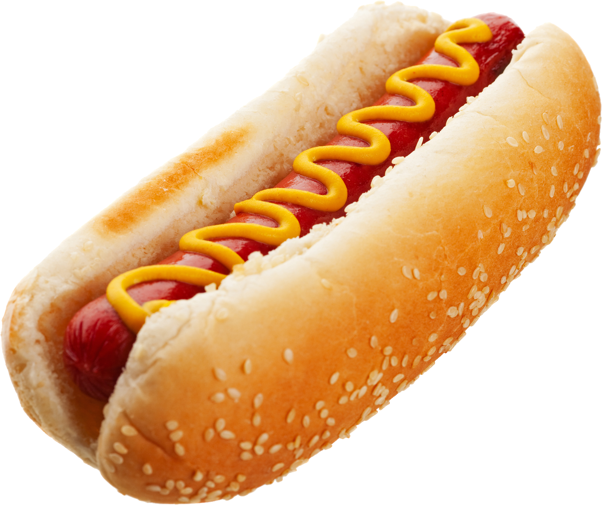

Instructions
You can add or remove notes by clicking on the gray rows at the top. UltraBox automatically plays the notes out loud for you. Try it! 
Notes go into patterns, and you can edit one pattern at a time. Those numbered boxes at the bottom of the editor are the different patterns you can edit. Click the boxes to move to a different part of the song, or click the arrows on the currently selected box to swap which pattern is played during that part of the song.
UltraBox can play several rows of patterns simultaneously, and each row has its own set of patterns. Most rows can play melodies or harmonies, but the bottom row is for drums.
All song data is contained in the URL at the top of your browser. When you make changes to the song, the URL is updated to reflect your changes. When you are satisfied with your song, just copy and paste the URL to save and share your song!
When UltraBox has focus (click on its interface above), you can use these keyboard shortcuts:
- Spacebar: play or pause the song
- Shift Spacebar: play from mouse location
- Z: undo, Y or Shift Z: redo
- C: copy pattern from selection
- V: paste pattern into selection
- 0-9: assign pattern number to selection
- Arrows: move selection
- Ctrl + Arrows: rearrange channels
- [ ]: move playhead backward or forward
- F/H: move to First or Highlighted pattern
- Shift & Drag: select part of a pattern
- These are just a few shortcuts, check UltraBox's edit menu for more!
In the note pattern editor, you can click and drag horizontally on a note to adjust its duration. You can also click above or below an existing note to add more notes to be played simultaneously, which is called a chord.
ADVANCED: Drag vertically from an existing note to bend its pitch, or drag vertically from above or below the note to adjust its volume. You can perform fine volume adjustment if you hold Control while doing this!
ADVANCED: Click and drag on the pattern grid to make a selection. You can then press C/V to mass copy/paste parts of your song.
UltraBox has many more features. Try playing with the buttons and menus on the right side to find out what it can do! You can also click on the label next to each option for a description of what it does. Some features are hard to find anywhere though - for example, if your song has any modulator channels, you can hold Ctrl or Shift while the song is playing to record the movement of sliders directly! If you want to learn more tips, tricks, and best practices though, see below.
Want to see what people have made with BeepBox? Songs that were shared on Twitter prior to 2023-05-22 can now be browsed in this interactive archive! Additionally, there's an active BeepBox Discord who you can share songs with and ask questions!
About
UltraBox is a mod of BeepBox developed by Main and Neptendo. The easiest way to contact the developers is via the Beepbox Discord.
UltraBox does not claim ownership over songs created with it, so original songs belong to their authors.
Neither Ultrabox nor its creators assume responsibility for any copyrighted material played on UltraBox. No songs are ever received, recorded, or distributed by UltraBox's servers. All song data is contained in the URL after the hash (#) mark, and Ultrabox running inside your browser converts that data into sound waves.
UltraBox does not collect, track, or share any user data.
You can download and use the source code under the MIT license. The original BeepBox source code by John Nesky can be found here.
The patch notes of Ultrabox are available here.